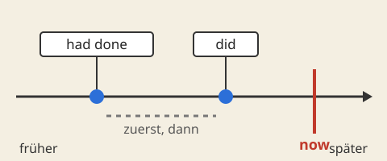

Was schon vorher geschehen war: das past perfect
Mit einem KI-Tutor lernen
Ein KI-Tutor erklärt dir diese Seite und hilft dir bei den Aufgaben. Wähl deinen Assistenten:
Mit Claude öffnen Mit ChatGPT öffnen Mit Mistral Vibe öffnen
Du nutzt dein eigenes Konto beim Anbieter. Der Assistent ist kein Angebot von lernapps.net: lernapps liefert nur Inhalte und Aufgaben. Die Wahl gilt für alle Seiten, nur auf diesem Gerät.
Zwei Ereignisse, ein Zeitstrahl
Aufgabe
Lösung
Die Abfahrt des Busses. richtige Antwort
Der Bus fuhr zuerst ab. Was früher geschah, liegt weiter links.
Peters Ankunft an der Haltestelle.
Peter kam später an, da war der Bus schon weg. Seine Ankunft liegt weiter rechts, näher bei now.
Beide am selben Punkt.
Dann wäre der Bus noch da gewesen, als Peter ankam. Er war aber schon weg.
Was früher passiert ist, liegt auf dem Strahl weiter links.
Das kannst du danach: Du sagst auf Englisch, was vor einem anderen Ereignis in der Vergangenheit schon geschehen war. Und du bildest das past perfect mit had und der 3. Form.
Ein Chat
| Englisch | Deutsch |
|---|---|
| wallet | Geldbeutel |
| forget, forgot, forgotten | vergessen |
| seat | Sitzplatz |
| cinema | Kino |
| save | freihalten, aufheben |
[1] Ellie: Where are you? The film starts in ten minutes!
[2] Peter: I'm at the bus stop. When I got here, the bus had already left.
[3] Ellie: What? Why are you so late?
[4] Peter: I had forgotten my wallet, so I had gone back home to get it.
[5] Ellie: Oh no! Amir had already bought the tickets when I arrived. He is waiting inside.
[6] Peter: Great! Has he found seats for us?
[7] Ellie: Yes. When I came in, he had already put his jacket on the seat next to him.
[8] Peter: I will run to the cinema now. Please keep my seat!
[9] Amir: Hi Peter, don't worry. I have saved you a seat next to me. Hurry up, the film is starting!
Der Punkt vor dem Punkt
Zwei Ereignisse in der Vergangenheit liegen auf dem Strahl nebeneinander. Das spätere erzählst du im simple past, das frühere rückt einen Schritt nach links. Es heißt past perfect. Du bildest es mit had und der 3. Form des Verbs, so wie du die 3. Form schon vom present perfect kennst.

© CC-BY-4.0Der linke Punkt geschah zuerst. Das Fähnchen had done zeigt auf ihn, das Fähnchen did auf den späteren Punkt.
| Person | Form | Beispiel |
|---|---|---|
| alle Personen | had opened | She had opened the window before the lesson started. |
| Verneinung | hadn't opened | He hadn't opened his book. |
| Frage | Had … opened? | Had they opened the shop? |
Merke
had + 3. Form. Bei allen Personen steht had, es gibt kein -s. Signalwörter sind already (schon), before (bevor) und when (als). Das spätere Ereignis steht im simple past, das frühere im past perfect. Das past perfect brauchst du nur, wenn die Reihenfolge wichtig ist.
Übung
Aufgabe
Lösung
Der Bus fuhr ab. richtige Antwort
Der Bus war schon weg, als Peter ankam. Sein Abfahren liegt als Punkt vor Peters Ankunft.
Peter kam an der Haltestelle an.
Peter kam später an, das steht im simple past (got here). Der Bus war da schon weg.
Beide Ereignisse geschahen gleichzeitig.
Dann hätte Peter den Bus noch gesehen. Er war aber schon weg.
Das past perfect (had left) nennt das frühere Ereignis, das simple past (got here) das spätere.
Aufgabe
Lösung
Zeile 4 richtige Antwort
In Zeile 4 steht had forgotten und had gone, das war vor dem Gespräch passiert.
Zeile 5 richtige Antwort
In Zeile 5 hatte Amir die Karten schon gekauft (had already bought), bevor Ellie ankam.
Zeile 7 richtige Antwort
In Zeile 7 hatte Amir schon seine Jacke auf den Platz gelegt (had already put), bevor Ellie hereinkam.
Zeile 1
In Zeile 1 steht das simple present: The film starts. Das ist die Gegenwart.
Zeile 8
In Zeile 8 steht will run. Das ist die Zukunft.
Das past perfect (had + 3. Form) steht bei dem, was früher war.
Aufgabe
Wähle die richtige Form. Das frühere Ereignis steht im past perfect.
Tipp
Das frühere Ereignis bekommt had und die 3. Form.
- Als wir ankamen, hatte der Film schon begonnen. → When we arrived, the film … already.
- Sie fand ihre Tasche nicht mehr, denn sie hatte sie im Bus vergessen. → She couldn't find her bag because she … it on the bus.
- Die Kinder hatten das Essen schon gekocht, als die Eltern kamen. → The children … the dinner when their parents came.
- Er hatte noch nie Schnee gesehen. → He … snow before.
Lösung
- When we arrived, the film had begun already.
- She couldn't find her bag because she had forgotten it on the bus.
- The children had already cooked the dinner when their parents came.
- He had never seen snow before.
Aufgabe
Schreibe den ganzen Satz mit dem past perfect für das frühere Ereignis.
Tipp
Frage dich, was zuerst passiert war. Das bekommt had und die 3. Form.
- when · I · arrive · the lesson · already · begin
- Sophie · lose · her key · before · she · enter the house
- Amir · already · eat · when · Ellie · call
- they · not · finish · when · the bell · ring
Lösung
- When I arrived, the lesson had already begun.
- Sophie had lost her key before she entered the house.
- Amir had already eaten when Ellie called.
- They hadn't finished when the bell rang. (auch richtig: They had not finished when the bell rang.)
Aufgabe
In jedem Satz steckt ein Fehler. Schreibe den Satz richtig.
Tipp
Prüfe die Form nach had.
- She had went home before it rained.
- I hadn't saw the film before.
Lösung
- She had gone home before it rained.
- I hadn't seen the film before.
Aufgabe
Hör zu und schreibe, was du hörst.
- KI
- KI
- KI
Lösung
- The teacher had left the room before the bell rang.
- Had they met before the party?
- My brother hadn't tried the soup.
Selbst sprechen und schreiben
Aufgabe
Hör zu, sprich nach und nimm dich auf. Vergleiche dann mit dem Original.
Tipp
Hör den Satz zuerst. Sprich langsam nach und achte auf had und hadn't.
- We had already eaten when Dad came home.KI
- Sophie had lost her pen before the lesson.KI
- He hadn't visited the museum before.KI
Zum Aufnehmen braucht diese Aufgabe JavaScript. Die Beispiele kannst du auch ohne anhören.
Lösung
- We had already eaten when Dad came home.
- Sophie had lost her pen before the lesson.
- He hadn't visited the museum before.
Offene Aufgabe
Schreibe eine kurze Chat-Nachricht von drei bis vier Sätzen. Du kommst zu spät und erklärst, was schon passiert war, als du ankamst. Du kannst so beginnen: When I got there, … had already …
Eine gute Antwort enthält:
Lösung
When I got to the station, the train had already left. I had forgotten my phone at home, so I had gone back to get it. That is why I was late.
Wie es weitergeht
Am Wandbild liegen jetzt zwei Punkte in der Vergangenheit, der frühere und der spätere. Auf der nächsten Seite lernst du, wie du mit when, after, before und as soon as die Zeiten richtig abstimmst.
Fehler gefunden oder eine Idee für diese App?